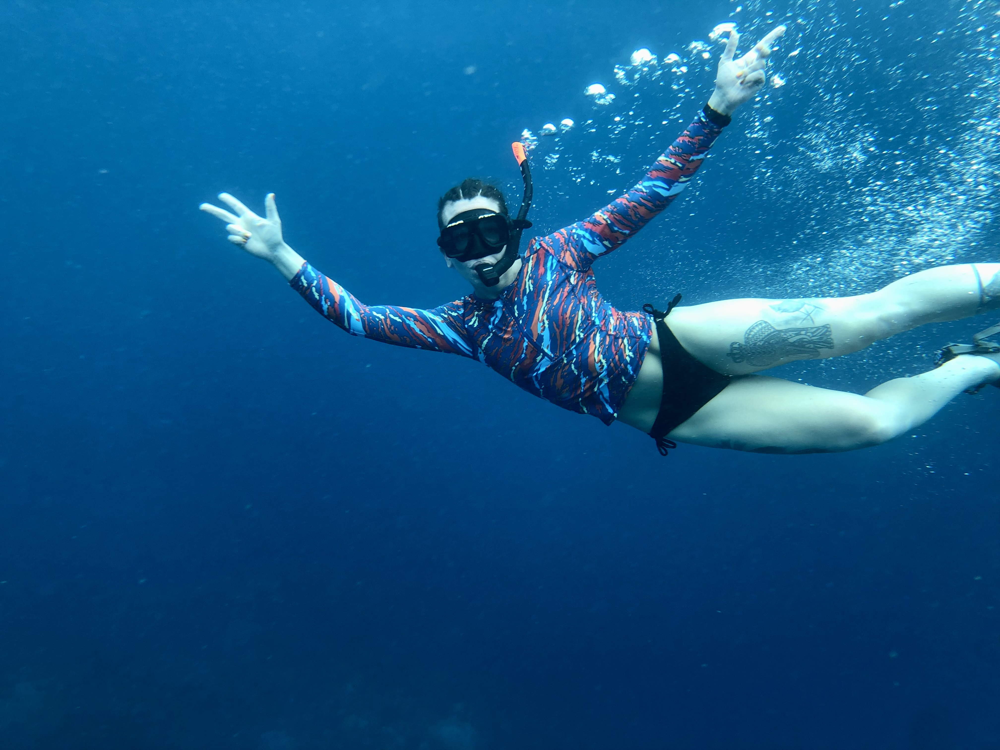

Rachael J Goers
Creative and logical UX/UI designer passionate about creating user experiences through visual and information design. Certificate in UX/UI Design from the University of Minnesota. Bachelor of Arts in Music Business. Strengths in human empathy, teamwork, and project management. A self-starter who works well on a team or independently. Years of experience studying and working in multiple mediums of art as well as high-level critical thinking and concise communication.
www.rachaelgoers.comAbout Me
Creative and logical UX/UI designer passionate about creating positive user experiences through informational and visual design. Certificate in UX/UI Design from the University of Minnesota. Strengths in human empathy, teamwork, and project management. Years of experience studying and working in music, painting, graphic design, film studies, event production, and multi-faceted management. My background is as diverse and eclectic as I am. My interests and talents lie in the arts and athletics; I've pursued both in my professional career. There is more of an overlap between the two worlds than one might think. My experience ranges from small business ownership and personal training to venue management and event coordination. Working with one-on-one sessions, coaching a team, and managing an event are all within my wheelhouse. I work well on a team but I'm also a self-starter.
